Meet the Mom's
Honey - Poodle
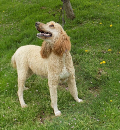
Honey is a dazzling red & white Standard Poodle.
She is about 58 pounds.
She is very sweet and playful!!!
She loves playing ball :)
Gracie O'Malley - Golden doodle
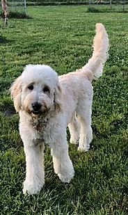
Our youngest friend. She is eighteen months old and
48 pounds but she will grow a little more before reaching
maturity. She is a beautiful white and cream English goldendoodle.
Taylor - Golden Retriever
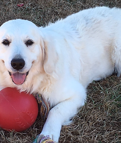
Taylor is a gorgeous Golden Retriever. She is about 55 pounds of love and fun!
She is an amazing retriever and will play ball endlessly! She has a
beautiful light colorered coat and a sweet gentle disposition.
Mystic - Golden doodle
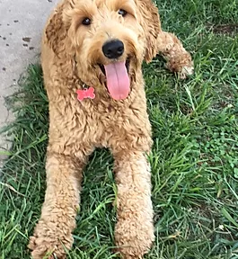
Mystic is from the breeding of Virginia Beach Goldendoodles! She is a pup
from Patsy and Keagan. Her enthusiasm for life is incredible...she is smart
and stunning. Her gorgeous red coat is incredible!
Teagan - Poodle
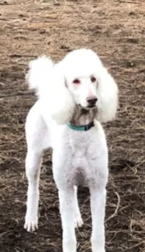
Teagan is a beautiful cream/white standard poodle. She is extremely social
and has an amazing structure and intelligence. Teagan will retrieve a ball for hours!
Betty White - Golden doodle
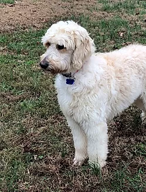
Betty White is an impressive creme & white Goldendoodle. Betty is 55 pounds of fun and
happiness. Her structure and movement are impressive. She will be a spectacular golden doodle mom!
Brazen - Poodle
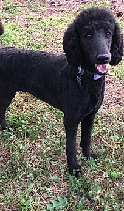
Our tomboy poodle. She is 50 pounds of muscle and an extremely athletic and loving girl with a gorgeous
black/blue rich coat. We have had her since she was a pup and have enjoyed watching her develop and mature.
Emma - Poodle
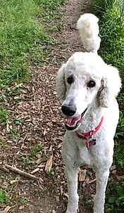
Is our dainty loving girl, she has a stunning white coat and she loves running and playing with the other
dogs. She is 40 pounds of bounding love & beauty!!
Meet the Dad's
Ghost - Golden Retriever
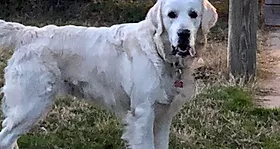
Introducing Sir Ghost of Galway. He is the son of Ukrainian imported English golden retrievers.
He is an 80 pound athlete with absolutely incredible genetics and temperament
Yukon - Poodle
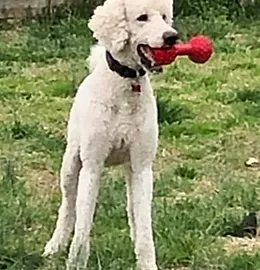
Yukon is a handsome white Standard Poodle who will be producing gorgeous F1B pups with one of
our Golden doodles. He comes from a great bloodline and is smart and athletic. He is AKC registered is 65 pounds of lean muscle!
Stan Lee - Golden doodle
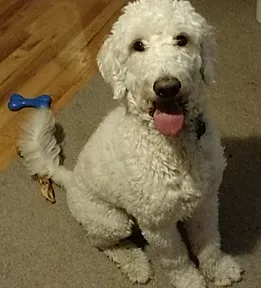
Stan Lee is a handsome Goldendoodle. He is about 68 pounds and quite the stud!!! He has never met a stranger & has an amazing
temperament! He comes from a great bloodline of Virginia Beach Golden doodles!
Dublin O'Doodle - Golden doodle
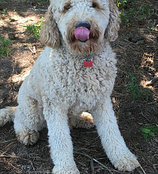
Dublin O'Doodle was bred at Virginia Beach Golden doodles. He is the son of Reba & Yukon and 60 pounds of love and fun!!!
He has a gorgeous curly coat that is gold and red. He will make amazing F1B Golden doodles!
Panda - Poodle
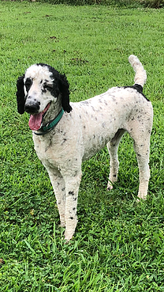
Panda is a handsome 65 pound Standard poodle with a phenomenal temperament. He has amazing markings and loves everyone.
He will be one of our starts to make beautiful Virginia Beach Golden doodles.